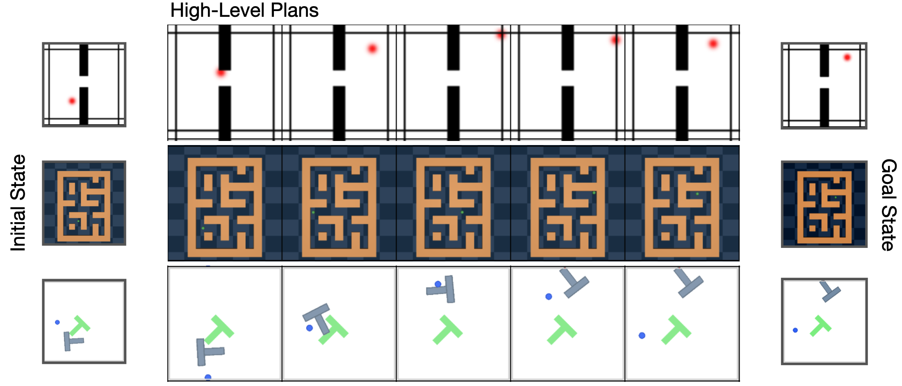

Hierarchical World Models with
Implicit Dynamics
Abstract
Planning with world models enables test-time adaptation for embodied agents, offering superior generalization over direct policy learning. However, long-horizon tasks remain hindered by cumulative errors and search complexity. Existing hierarchical methods often use rigid macro-actions or latent skills, leading to brittle representations and limited fine-grained control. We introduce ID-WM (Implicit Dynamics World Models), a hierarchical world model that decouples state-space reachability from local control. Our framework utilizes a high-level model to sample feasible transitions across the state manifold and a low-level world model as inverse dynamics solver to ground these transitions into precise actions. This allows the planner to identify reachable subgoals without being constrained by low-level execution details. By prioritizing local physical feasibility over global behavioral patterns, ID-WM synthesizes novel long-horizon plans from short segments, transcending the specific behavioral modes seen during training. We demonstrate its effectiveness across three navigation and manipulation suites, achieving a 38.5% improvement over state-of-the-art policy and diffusion-based planners. Crucially, by leveraging this hierarchical structure to mitigate compounding errors, our approach yields a 120% performance gain over single-level world model MPC, particularly in complex, unseen configurations for long-horizon tasks. Videos can be viewed at https://anon-id-wm.github.io.

Architecture of ID-WM

High-level subgoals planned by ID-WM